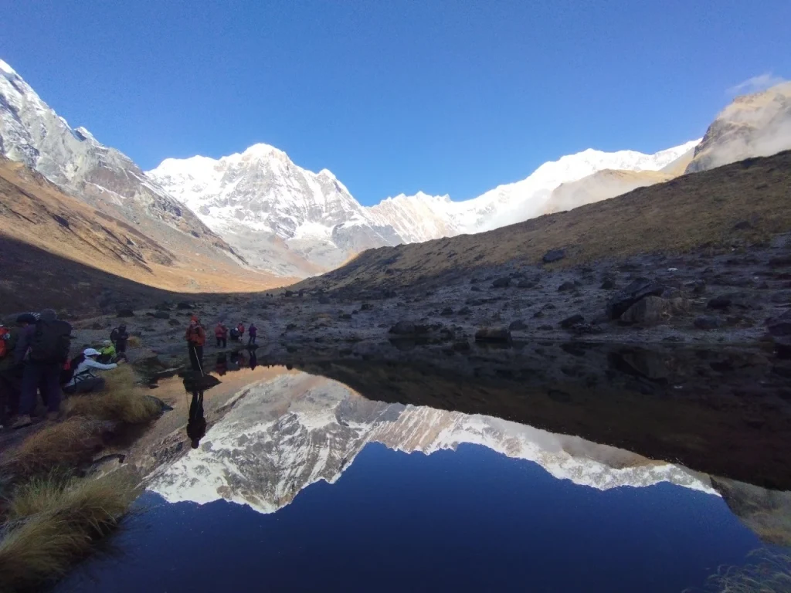
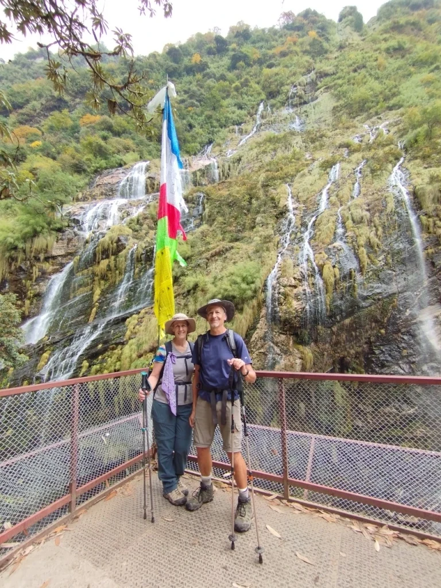
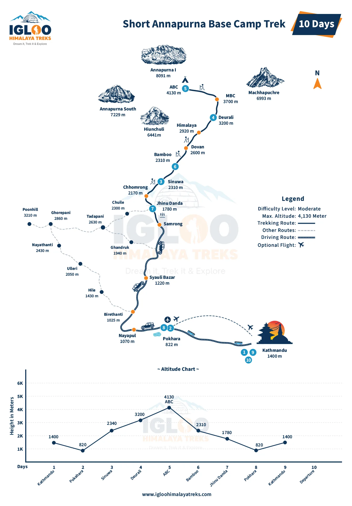
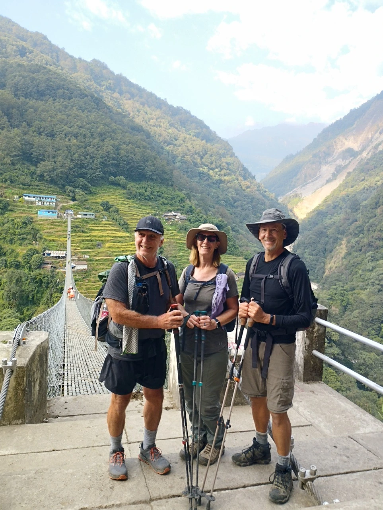

The Fast-Paced Sanctuary: What Makes the Short ABC Trek Difficult?
The standard Annapurna Base Camp trek is universally graded as Moderate when completed over 10 to 12 days. However, when you condense that exact same 70-kilometer mountain route into 5 to 7 days, the difficulty rating surges to Demanding to Strenuous.
The difficulty of the short ABC trek is driven by three intersecting stressors:
- Elevation Velocity: On a standard trek, you gain an average of 350 to 450 vertical meters of sleeping elevation per day. On a 5-day express trek, you climb from Pokhara (820m) to ABC (4,130m) in 72 hours, forcing your body to acclimatize to a 40% reduction in oxygen molecules while operating under intense physical exertion.
- Relentless Stair Mileage: The Modi Khola river valley is not a gentle gradient; it is a series of sheer, hand-hewn stone staircases. An express itinerary forces you to tackle 12 to 16 kilometers and 1,800 to 2,500 vertical steps every single day without rest or recovery days.
- Zero Recovery Buffers: If you suffer from delayed onset muscle soreness (DOMS), minor knee inflammation, or poor sleep on Day 2, there are no scheduled rest days to recover. You must lace up your boots at 6:30 AM and climb again.
The Core Reality: The short ABC trek is not a sightseeing stroll; it is a high-tempo mountain endurance mission. It is perfectly achievable for hikers with solid cardiovascular conditioning, but requires mental discipline, lightweight gear, and strict hydration pacing.
Elevation Velocity: Climbing 3,300m in 3.5 Days & AMS Vulnerability
The primary medical risk on any rapid Himalayan ascent is Acute Mountain Sickness (AMS). The human body requires time to produce erythropoietin (EPO), stimulate red blood cell production, and adjust ventilatory response to thin air.
On a 5 or 6-day short ABC itinerary, you typically drive to Matque (1,500m), hike to Chhomrong (2,170m) on Day 1, push to Himalaya or Deurali (3,200m) on Day 2, and reach Machapuchare Base Camp (3,700m) or ABC (4,130m) on Day 3. Gaining nearly 2,000 vertical meters between Day 1 and Day 3 places significant stress on pulmonary and cerebral vascular systems.
The Non-Negotiable Sleeping Ceiling: Even on the fastest express itineraries, never sleep above 3,200m on Day 2. Spending Night 2 at Himalaya Hotel (2,920m) or Deurali (3,200m) provides the vital physiological pause your body needs to tolerate sleeping at ABC (4,130m) on Night 3 or 4.
| Expedition Metric | Standard Trek (10 - 12 Days) | Short Express Trek (5 - 7 Days) | Difficulty Impact on Trekker |
|---|---|---|---|
| Trailhead Route | Via Ghorepani & Poon Hill | Direct via Matque / Siwai | Bypasses Poon Hill; saves 3-4 days of walking. |
| Daily Hiking Time | 4.5 - 5.5 hours | 6.5 - 8.5 hours | High cumulative muscular & cardiovascular fatigue. |
| Daily Vertical Gain | 350m - 500m / day | 700m - 1,100m / day | Elevates risk of early altitude headache and AMS. |
| Rest / Contingency Days | 1 - 2 rest/buffer days | 0 buffer days | Weather delays directly impact summit schedule. |
| Physical Grading | Moderate (Grade 3) | Demanding / Strenuous (Grade 4) | Requires pre-existing endurance base. |

Distance & Trail Hours: Sustaining 12-16 km Daily on Stone Stairs
In flat road running or gentle trail hiking, covering 14 kilometers takes roughly 2.5 to 3 hours. In the Annapurna Sanctuary, 14 kilometers represents a grueling 7-hour undertaking. You are constantly negotiating damp stone steps, crossing glacial torrents over narrow wooden footbridges, and scrambling over exposed tree roots.
On a 6-day express trek, daily trail metrics test your stamina:
- Day 1: Matque to Chhomrong (8.5 km, ~5 hours, +700m net gain).
- Day 2: Chhomrong to Deurali via Sinuwa & Dovan (14.2 km, ~7.5 hours, +1,100m / -400m).
- Day 3: Deurali to ABC via MBC (10.0 km, ~6 hours, +930m net gain).
- Day 4: ABC sunrise exploration, descent to Bamboo (15.0 km, ~7 hours, -1,820m drop).
- Day 5: Bamboo to Jhinu Danda hot springs (9.0 km, ~5 hours, steep stair climbs).
- Day 6: Jhinu to Matque, drive to Pokhara (4.0 km, ~2 hours trek + 3 hours drive).

The Biomechanical Shock of Rapid Stair Ascents and Descents
While cardiovascular fitness allows you to power up hills, biomechanical resilience determines whether your joints survive the descent. The Annapurna trail features over 6,000 hand-cut stone steps, with massive continuous flights at Ulleri, Chhomrong, and Sinuwa.
On an express descent—such as dropping 1,820 vertical meters from Annapurna Base Camp to Bamboo in a single day—your quadriceps muscles perform tens of thousands of eccentric contractions. Eccentric contractions (where muscle fibers lengthen under tension) cause microscopic tears in muscle fibers, leading to acute quadriceps soreness, trembling legs, and patellofemoral inflammation ('Trekker's Knee').
Without two adjustable trekking poles to transfer weight into your triceps, shoulders, and lats, your patellar tendons absorb impact forces equivalent to three to four times your total body weight on every single descending step.
5-Day vs 7-Day Express Itineraries: Pace, Route & Safety Comparison
When selecting a short ABC itinerary, choosing between a 5-day, 6-day, or 7-day schedule dictates your safety margin and physical comfort:
| Day | 6-Day Express Route | Distance | Hiking Hours | Elevation Gain / Loss | Physical Strain Level |
|---|---|---|---|---|---|
| Day 01 | Drive Pokhara to Matque (3 hrs), trek to Chhomrong | 8.5 km | 4.5 - 5 hrs | +670m | Moderate; warm-up stage |
| Day 02 | Chhomrong to Deurali via Sinuwa & Dovan | 14.2 km | 7 - 8 hrs | +1,250m / -320m | Very High; massive stair day |
| Day 03 | Deurali to Annapurna Base Camp (ABC) via MBC | 10.0 km | 6 - 6.5 hrs | +930m | High; enters high-altitude basin |
| Day 04 | ABC sunrise shoot, descend to Bamboo | 15.0 km | 6.5 - 7.5 hrs | -1,820m | Extreme knee & quad impact |
| Day 05 | Bamboo to Jhinu Danda (Hot Springs) | 9.0 km | 4.5 - 5 hrs | +350m / -880m | Moderate; hot thermal springs soak |
| Day 06 | Jhinu to Matque/Siwai, drive to Pokhara | 4.0 km | 2 hrs trek + 3 hrs drive | -150m | Light; easy celebration finish |
A 5-Day Itinerary is only recommended for semi-professional athletes, marathon runners, or experienced alpine trekkers who have already acclimatized on another trek. For 90% of fit hikers, the 6-Day or 7-Day Itinerary represents the sweet spot of rapid transit and physiological safety.

Cardiovascular Fitness Benchmarks: Who Can Safely Handle the Express Pace?
Can you safely complete the short ABC trek? To determine your physiological readiness, our senior mountain guides look for specific fitness benchmarks prior to booking an express trek:
- Continuous Running Benchmark: You should be able to run 8 to 10 kilometers continuously on rolling outdoor terrain in under 60 minutes without stopping.
- Stairmaster Endurance: You should be capable of sustaining 45 minutes on a gym Stairmaster (or climbing 60 flights of real stairs) at Level 6–8 wearing a 5kg backpack without extreme breathlessness.
- Leg Strength & Core Stability: You can perform 3 sets of 25 bodyweight squats and hold a 60-second core plank with excellent form.
- Hiking Experience: You have completed at least two 15-kilometer day hikes with 800+ meters of elevation gain within the past two months.

Weather & Temperature Swings: Moving Fast from Heat to Freezing Cold
On an express trek, you move between microclimates so fast your body barely has time to adapt. On Day 1 in Matque and Chhomrong, you hike in 20°C to 24°C sub-tropical humidity. By Day 3 at Annapurna Base Camp, you are walking through sub-zero snowdrifts where night temperatures plunge to -8°C (autumn) or -18°C (winter).
This rapid thermal swing drains bodily energy reserves. Your metabolism must constantly toggle between sweating to cool down during humid uphill stair climbs and shivering to maintain core warmth in shaded river defiles. Dressing in versatile merino wool layers and carrying a high-loft down jacket in your daypack is critical.
Teahouse Recovery: Short Sleep Windows & Rest Protocol at 4,130m
Because you are hiking 7 to 8 hours daily on an express itinerary, your daily recovery window inside teahouses is tightly compressed. You will arrive at your lodge around 3:30 PM or 4:00 PM, stretch, wash up with wet wipes, eat dinner at 6:30 PM, and fall into bed by 8:30 PM to prepare for a 6:00 AM wake-up call.
However, sleeping soundly at 4,130 meters is notoriously difficult for beginners. Thin air causes 'Cheyne-Stokes breathing' (periodic breathing where you wake up feeling short of breath), and unheated bedrooms drop below freezing. If poor sleep accumulates over consecutive nights, mental stamina erodes rapidly.
The Express Recovery Protocol: Immediately upon reaching your lodge, change out of sweaty base layers into bone-dry merino thermals. Drink 1 liter of hot garlic soup or ginger tea with electrolytes. Avoid alcohol completely, and sleep with silicone earplugs to block out corridor noise.
Fueling the Fast Trek: Glycogen Storage, Electrolytes & Hydration Discipline
On an express pace, you burn between 3,500 and 5,000 calories daily. If you do not actively replenish your muscle glycogen stores, you will experience 'bonking'—a sudden, catastrophic state of muscular depletion where even taking five steps up a staircase feels impossible.
Fueling rules for the short trek:
- The High-Carb Mandate: Eat traditional Nepali Dal Bhat for lunch and dinner. The combination of steamed white rice and lentil soup provides quick-absorbing and slow-burning carbohydrates, plus amino acids. The unlimited free refills ensure you can consume 1,000+ calories per meal.
- Trail Snacking Every 60 Minutes: Carry portable energy snacks—almonds, dried figs, dates, flapjacks, and dark chocolate. Eat a small snack every hour on the trail before you feel hungry.
- Electrolyte Replacement: Plain water is insufficient when sweating heavily on humid stair ascents. Mix an electrolyte replacement packet (sodium, potassium, magnesium) into at least 1 liter of your daily drinking water to prevent muscle cramps and headaches.
Ultralight Packing Strategy: Carrying Sub-6kg Without Sacrificing Warmth
On a fast-paced trek, pack weight is your greatest enemy. Every additional kilogram in your daypack exponentially increases knee shock on stone steps and saps your stamina.
| Gear Category | Target Express Weight | Conventional Heavy Mistake | Weight-Saving Tactical Fix |
|---|---|---|---|
| Daypack | 650g - 900g | Heavy 65L internal frame pack (2.5kg) | Ultralight 28L-32L technical daypack with hip belt. |
| Insulation | 450g | Heavy ski jacket / fleece hoodies (1.5kg) | Ultralight 800+ fill goose down jacket with hood. |
| Footwear | 950g - 1,100g / pair | Heavy rigid mountaineering boots (2.2kg) | Mid-cut waterproof trekking boots or hybrid trail shoes. |
| Water Storage | 250g empty | Heavy steel insulated thermoses (1.2kg) | Two 1L ultralight Nalgene bottles + purification drops. |
| Total Target Pack Weight | Sub-6.0 kg | 14.0 kg - 18.0 kg overloading | Hire a dedicated agency porter for main duffels. |

Fast-Paced Travel in the Deurali-MBC Avalanche Corridor
Because express trekkers move quickly, you must be particularly vigilant about trail safety windows in the narrow Modi Khola gorge between Deurali (3,200m) and Machapuchare Base Camp (3,700m). This section passes through known avalanche chutes channeling snow from the western cliffs of Machapuchare.
The express advantage is speed: by departing Deurali at 6:30 AM, fast-paced trekkers can cross the entire hazard corridor before 9:00 AM—well before midday solar radiation destabilizes high snow cornices. Never attempt to push through this canyon in the late afternoon during winter or early spring.
Why a Dedicated Guide & Porter Are Critical on a Time-Compressed Trek
On a leisurely 12-day trek, minor logistical hiccups—such as arriving at a full teahouse and having to walk an extra 45 minutes to the next village—are mere inconveniences. On a compressed 6-day express schedule, a logistical delay can derail your entire expedition.
Having a dedicated local guide and porter is a massive performance multiplier:
- The Porter Advantage: Your porter carries your heavy sleeping bag, change of clothes, and toiletries in a waterproof duffel. Hiking with only a 5kg daypack saves your knees, reduces daily calorie expenditure by 25%, and prevents premature exhaustion.
- Advanced Room Reservations: Your guide calls ahead via mobile to lock in private rooms at Deurali and ABC, ensuring you have guaranteed beds waiting the moment you arrive.
- Real-Time Medical Monitoring: Guides carry fingertip pulse oximeters to test your blood oxygen saturation (SpO2) and pulse morning and evening, ensuring you don't push into dangerous AMS territory.

Budget & Cost Breakdown: 5 to 7 Day Express ABC Trekking
Because you spend fewer nights in teahouses, the short Annapurna Base Camp trek is one of the most cost-effective alpine adventures in Nepal. Below is an itemized breakdown of expected expenses for a 6-day express trek:
| Expense Category | Cost in NPR | Cost in USD | Details & Notes |
|---|---|---|---|
| Permits (ACAP + TIMS) | NPR 5,000 | ~$38 | Fixed official conservation and tracking permits. |
| Private 4WD Jeep (Pokhara-Matque round-trip) | NPR 12,000 - 15,000 total | ~$90 - $115 total | Split among passengers; saves 1.5 full days of road walking. |
| Teahouse Lodging (5 nights) | NPR 500 - 800 / night | ~$4 - $7 / night | Clean private twin rooms in mountain lodges. |
| Daily Meals & Hot Drinks (6 days) | NPR 3,200 - 4,200 / day | ~$24 - $32 / day | Nutritious breakfasts, hot lunches, hearty dinners, and tea. |
| Incidentals (Showers, Charging, Boiled Water) | NPR 500 - 800 / day | ~$4 - $6 / day | Pay-per-use teahouse amenities. |
| Licensed Trekking Guide | NPR 3,500 - 4,500 / day | ~$26 - $34 / day | Includes guide's wage, food, lodging, and full insurance. |
| Porter (Highly Recommended) | NPR 2,800 - 3,500 / day | ~$21 - $26 / day | Carries up to 18-20kg of main duffels. |
Is the Short ABC Trek Right for You? Self-Assessment & Golden Rules
The short Annapurna Base Camp trek is an exhilarating, highly rewarding alpine blitz. If you have limited vacation time, maintain solid baseline endurance fitness, and thrive on physical challenges, standing inside the frozen amphitheater of Annapurna I after just three days of hiking is an unforgettable triumph.
Before you commit, memorize these five core rules:
- Never Skip the Night at Deurali (3,200m): Bypassing Deurali to push directly to ABC is the #1 cause of medical evacuations on express itineraries.
- Hire a Porter to Carry Your Heavy Gear: Keeping your daypack under 6kg is the single most effective way to protect your knees and maintain pace.
- Carry Two Trekking Poles: Use poles on every descent to absorb joint impact and maintain balance on stone staircases.
- Enforce the 4-Liter Hydration Rule: Drink warm fluids and electrolytes continuously to offset the physiological strain of rapid ascent.
- Trek With a Trusted Local Partner: Partner with Igloo Himalaya Treks. Our experienced guides handle all permits, private 4WD logistics, room bookings, and medical oversight so you can focus entirely on the mountain.


Ready to Experience the Himalayas?
Whether you are preparing for high-altitude trekking, cultural circuits, or alpine summit expeditions, start planning a bespoke journey tailored to your fitness, travel season, and style.